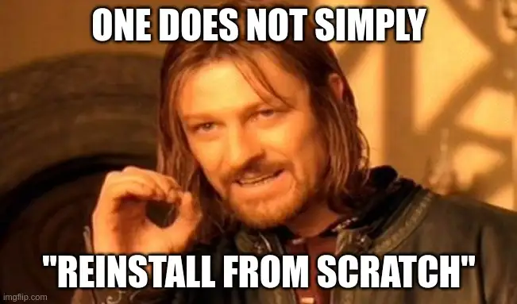

Why I Automated My Laptop Build
I've invested a fair bit of time over the last few years incrementally automating my laptop build. Now, I've got to a point where I can reliably wipe, rebuild, and pick up working where I left off in under thirty minutes. This post explains why I've invested that time.
- Thanks to
 for supporting this content.
for supporting this content.
In the Beginning¶
Your hard drive just failed.
You left your laptop on the train.
Oh and not to forget the big one...
Looks like your machine might have been compromised.
What thoughts and feelings do those scenarios trigger for you? Somewhere on this line?
abject terror <--------> no problem
{kind=link}
I'd guess most of us are somewhere in the middle.
- We solved the "omg how long before all my secrets show up on the net somewhere" terror with full disk encryption and strong passwords, if not multi-factor authentication
- We solved the "but the novel I've been working on for the last year" through the use of secure online storage instead of unique local copies
From my own experience and occasional conversations with peers over the last few years, most folks aren't quite at "no problem" though.
- You've got the reinstallation to do, and you've forgotten how, but you remember it's a pain
- You've maybe got a cloud backup but are unsure what that covers (and if you think you've been compromised, could your backup include something that lets the naughty folks back in?)
- You can't remember what you had installed, how you installed it, how you customised it... strap in for a few days of "argh, where's (insert application here)"
{kind=link}

That's where I was a few years ago.
What I Wanted¶
In a nutshell - I want to get back to a clean, up-to-date state, with a new hard drive encryption key, where I know exactly what is installed and where it came from.
Clean Installs¶
I want to clear out any accumulated cruft since I last reinstalled regularly. That used to be a bigger deal for performance than it is today, but brings a couple of important benefits.
If I wipe and set up again from scratch, I know exactly what's installed. If a threat actor has been able to quietly get in and is watching, waiting for an opportunity... well, as far as I know, they're gone now unless they're hiding my firmware.
Other benefits include wiping away mistakes I made or applications I installed for specific purposes and forgot to clear out, as well as clearing out stuff I've downloaded and so on.
Transparent Compliance¶
I want the installation and setup to be transparent and repeatable. I want to be able to include any complexity of installation and configuration that can be automated. I want to be able to give evidence to any stakeholder at a moment's notice and be sure that I'm not going to get caught out by the reality being different from my claims.
Clear Supply Chains¶
I'll call out clear and visible supply chains as a specific goal as well. I want it to be easy to understand who I'm depending on for software that runs on my equipment. I want to minimise and manage those supply chains carefully.
Convenience and Reliability¶
I want the process to be a minimal drain on my time. That covers reliability as well - I can say from bitter experience that when this process was not reliable, I could lose hours trying to patch up the gaps. I'm looking at you, Fedora, when you switched to cgroups v2 and totally broke docker for me!
To be fair, that was totally my fault - I'd not realised that Fedora was supposed to be driving things forward in the space, not the best match for my professional needs! I switched to Ubuntu-based a couple of years ago and no nasty surprises since.
I'm not sure I could reduce the time any more from here - it takes about 20 minutes total, with maybe 5 minutes of actual interactive stuff in that.
The other 15 mins are top-quality feet up, cup of coffee, engage "smug mode" time.
If it Hurts...¶
...do it more often.
Words of wisdom from the great Martin Fowler. I've heard this phrase numerous times over the past few years, and I apply it to my own equipment as well. Specifically:
- remembering how to do an OS install (now scripted)
- finding a low-friction way to bridge from standard OS install to my custom setup (after failing on-and-off to come up with a "clever" solution, the obvious finally smacked me in the face before I updated for this post - just use a second USB stick, dummy)
- remembering a new, strong password regularly (I change my password using a passphrasey approach based on the XKCD classic each time I do my wipe, and I see the numerous times I have to type it in each day as a feature helping me to remember it, not a pain!)
- knowing I'm going to wipe my hard drive every few months drills me to avoid keeping anything I'm going to miss on my local machine. I rarely get caught out, and when I do I can put it down to "no pain no gain"
- I usually have to do it at least twice each time - once for my EE machine, once for a client machine, leaving a week in between to let new passwords settle in my brain (if I'm using my own kit at the client - otherwise I split out EE and my personal stuff over my two laptops)
Coming Up¶
I'm producing this content because this whole process has been pretty reliable for the past couple of years, and I finally got around to recording the end-to-end process over the weekend - it's a bit more involved than a normal video because I needed to point a half-decent camera at a screen with appropriate resolution to capture the whole process. I'll slap a timer on it and cut out the boring stuff where the machine is just getting on with it.
For those who just can't contain the excitement, my current xubuntu-workstation repository is public on GitHub. It is jam-packed with spoilers.
Lights...
Camera...
...